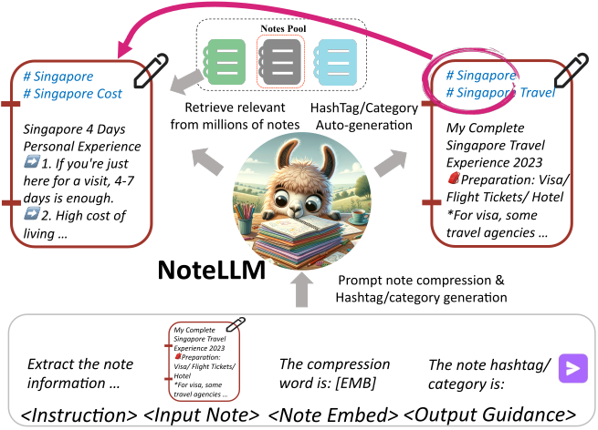
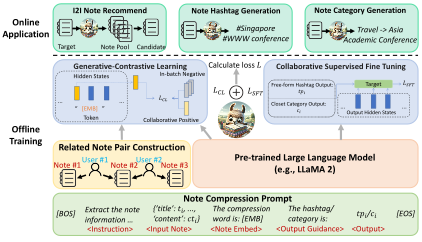
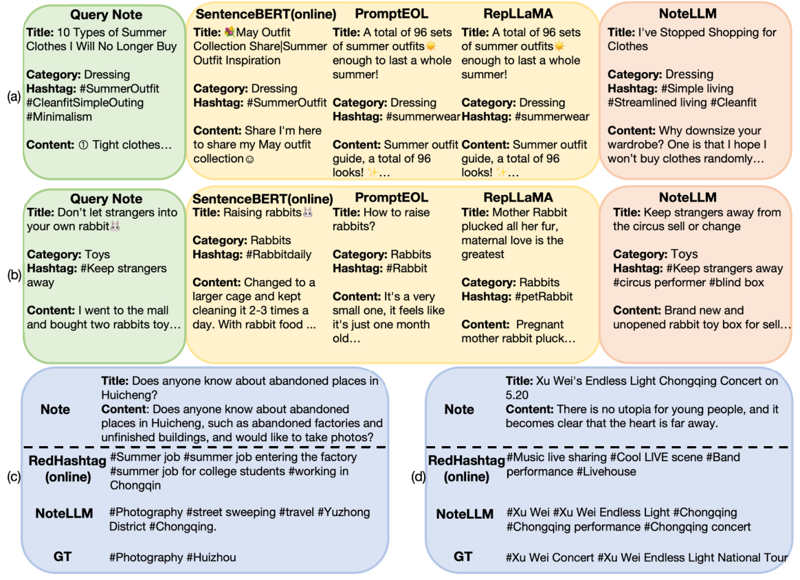

NoteLLM：一种用于笔记推荐的可检索大语言模型
摘要
人们喜欢在在线社区中分享包括自身经历在内的“笔记”。 因此，推荐与用户兴趣相符的笔记已成为一项关键任务。 现有在线方法仅将笔记输入基于BERT的模型以生成笔记嵌入，进而评估相似度。 然而，这些方法可能未充分利用一些重要线索，例如话题标签或类别，它们代表笔记的关键概念。 事实上，学习生成话题标签/类别有可能增强笔记嵌入，二者都将关键笔记信息压缩到有限内容中。 此外，大语言模型（LLM）在理解自然语言方面已显著优于BERT。 将LLM引入笔记推荐具有广阔前景。 本文提出一种名为NoteLLM的新型统一框架，利用LLM处理物品到物品（I2I）笔记推荐。 具体而言，我们利用笔记压缩提示将笔记压缩为单个特殊词元，并进一步通过对比学习方法学习潜在相关笔记的嵌入。 此外，我们使用NoteLLM通过指令微调来总结笔记并自动生成话题标签/类别。 在真实场景上的大量验证表明，与在线基线相比，我们提出的方法有效，并在小红书的推荐系统中展现出显著提升。

1. 引言
小红书和Lemon8等社交媒体聚焦于用户生成内容（UGC），提供更真实、更个性化的用户体验，因而在用户中广受欢迎。这些平台鼓励用户分享产品评测、旅行博客和生活经历等内容，也称为“笔记”。 通过根据用户偏好提供更个性化的笔记，笔记推荐在提升用户参与度方面发挥着关键作用(Liao et al., 2022; Wu et al., 2023a; Peng et al., 2023b; Zhao et al., 2023a)。 物品到物品（I2I）笔记推荐是一种经典方式，可从百万级笔记池中检索用户可能感兴趣的笔记(Linden et al., 2003; Zhao et al., 2023b)。 给定一个目标笔记，I2I方法根据内容(Zhao et al., 2023b)或协同信号(Linden et al., 2003)选择相关笔记。
现有的I2I笔记推荐在线方法通常将完整笔记内容输入基于BERT的模型(Devlin et al., 2018)以生成笔记嵌入，并基于嵌入相似度推荐相关笔记(Reimers and Gurevych, 2019; Jiang et al., 2022)。 然而，这些方法仅将话题标签/类别视为笔记内容的一部分，未充分利用其潜力。 如图1所示，话题标签/类别（例如# Singapore）代表笔记的核心思想，在判断两个笔记是否包含相关内容时至关重要。 事实上，我们发现生成话题标签/类别与生成笔记嵌入相似。 二者都将关键笔记信息压缩到有限内容中。 因此，学习生成话题标签/类别有可能提升嵌入质量。 此外，大语言模型（LLM）近期在自然语言(Xu et al., 2023; Jiang et al., 2023; Lyu et al., 2024; Touvron et al., 2023b)和推荐(Peng et al., 2023b; Bao et al., 2023b, a; Zhang et al., 2023b)方面展现出强大能力。 然而，关于将LLM应用于I2I推荐的研究仍然稀缺。 利用LLM改进I2I笔记推荐具有相当大的前景。
受上述见解启发，本文提出一种名为NoteLLM的统一多任务方法。 基于LLM，NoteLLM从I2I笔记推荐和话题标签/类别生成任务中学习，旨在通过学会提取浓缩概念来增强I2I笔记推荐能力。 具体而言，我们首先为每个笔记样本构建统一的笔记压缩提示，然后通过预训练LLM（例如LLaMA 2 (Touvron et al., 2023b)）进行解码，利用一个特殊词元压缩笔记内容并同时生成话题标签/类别。 为构建相关笔记对，我们统计用户行为中所有笔记对的共现分数，并为每个笔记形成共现分数集合。 我们选择集合中共现分数最高的笔记作为给定笔记的相关笔记。 进一步地，为每个样本推荐相关笔记，生成式对比学习（GCL）利用压缩词元作为每个笔记的嵌入，然后训练LLM从批内负样本中识别相关笔记。 同时，我们采用协同监督微调（CSFT）方法训练模型为每个笔记生成话题标签/类别。 由于I2I笔记推荐任务学习到的压缩词元与话题标签/类别生成任务都旨在提取笔记内容的关键概念，CSFT能够有效增强笔记嵌入。
本文的贡献如下：
-
•
据我们所知，我们的NoteLLM框架是首个利用LLM处理I2I推荐任务的框架。 它揭示出引入LLM是一种实用且有前景的策略，可增强I2I推荐系统。
-
•
我们提出一个多任务框架，学习I2I推荐任务和话题标签/类别生成任务以增强笔记嵌入。 我们展示出学习生成压缩概念有利于I2I推荐任务。
-
•
在小红书的离线实验和在线工业场景上的大量验证表明，我们提出的笔记推荐技术框架有效。
2. 相关工作
2.1. I2I推荐
I2I推荐是一项关键技术，可基于目标物品从大规模物品池中推荐排序后的物品列表。 I2I推荐要么预先构建I2I索引(Yang et al., 2020)，要么使用近似k近邻方法在线检索相关物品(Johnson et al., 2019)。 传统I2I推荐通常仅依赖用户行为的协同信号(Zhu et al., 2018; Yang et al., 2020)。 然而，由于缺少用户-物品交互，这些方法无法处理冷启动物品(Zhao et al., 2023b)。 为解决该问题，许多研究探索了基于内容的I2I推荐(Huang et al., 2013; Zhao et al., 2023b)。 我们聚焦于基于文本的I2I推荐系统，其根据物品的文本内容衡量物品相似度。 最初，基于文本的I2I推荐表示依赖于基于词的稀疏向量匹配机制(Robertson et al., 2009; Ramos et al., 2003)。 随着深度学习的出现，神经网络已被证明更擅长表示文本信息(Mikolov et al., 2013; Devlin et al., 2018)。 先前工作(Karpukhin et al., 2020; Ma et al., 2022; Xiao et al., 2022b, a)将文本转换为同一潜在空间中的嵌入，以通过嵌入相似度衡量其关系。 LLM近期因其令人印象深刻的能力而备受关注(Xu et al., 2023; Yin et al., 2023a; Peng et al., 2023a)。 然而，LLM在I2I推荐中的应用仍未被探索。 此外，一些研究仅将LLM视为生成嵌入的编码器(Jiang et al., 2023; Muennighoff, 2022; Ma et al., 2023)，未能发挥其生成的全部潜力。 在NoteLLM中，我们利用LLM生成话题标签/类别，这能够增强笔记嵌入。
2.2. 用于推荐的LLM
LLM近期取得了重大进展(Touvron et al., 2023a, b; OpenAI, 2023)。 因此，许多研究将LLM纳入推荐任务(Wu et al., 2023b; Lin et al., 2023; Fan et al., 2023)。 将LLM与推荐相结合主要有三种方法(Wu et al., 2023b; Lin et al., 2023)。 第一种方法是利用LLM增强数据(Liu et al., 2023a; Xi et al., 2023; Mysore et al., 2023)。 由于LLM包含丰富的世界知识，增强数据比原始数据更突出、更多样(Xi et al., 2023; Wang et al., 2023a; Lyu et al., 2023)。 然而，这些方法需要持续预处理测试数据以与增强训练数据对齐，并且高度依赖LLM生成的质量。 第二种方法是利用LLM直接进行推荐。 这些方法设计特殊提示(Wang et al., 2023b; Huang et al., 2023; Liu et al., 2023b)或使用监督微调(Bao et al., 2023b, a; Zhang et al., 2023b)来引导LLM回答给定问题。 然而，由于上下文长度有限，这些方法仅关注重排序阶段(Hou et al., 2023; Zhang et al., 2023b)，该阶段仅包含数十个候选物品。 最后一种方法是采用LLM作为编码器生成表示特定物品的嵌入(Li et al., 2023; Wu et al., 2021)。 尽管这些方法能有效提取信息，但它们都舍弃了LLM的生成能力。 与上述方法不同，NoteLLM在召回阶段使用LLM，并学习话题标签生成以提升LLM生成嵌入的能力。
2.3. 从文本生成话题标签/类别
话题标签和类别作为社交媒体上的标记机制，可简化特定主题消息的识别，并帮助用户找到主题内容。从文本生成这些内容有助于为未标记笔记创建标识符，或根据用户偏好向其建议选项。 在该领域，主要有三种方法：抽取式、分类式和生成式方法。 抽取式方法识别文本中的关键短语作为话题标签或类别(Zhang et al., 2016, 2018)，但无法获得原文中不存在的标签。 分类式方法将该任务视为文本分类问题(Zeng et al., 2018; Zhang et al., 2017; Kou et al., 2018)。 然而，由于人类生成的话题标签具有多样、自由形式的特点，这些方法可能产生次优结果。 生成式方法根据输入文本直接生成话题标签/类别(Wang et al., 2019b, a; Diao et al., 2023)。 但这些方法仅限于解决话题标签/类别生成任务。 在NoteLLM中，LLM执行多任务学习，同时进行I2I推荐和话题标签/类别生成。 由于这两个任务相似，学习生成话题标签/类别也能增强I2I推荐。
3. 问题定义
本节介绍问题定义。 我们假设为笔记池，其中是笔记数量。 每个笔记包含标题、话题标签、类别和内容。 我们将第个笔记表示为，其中、、、分别表示标题、话题标签、类别和内容。 在I2I笔记推荐任务中，给定目标笔记，基于LLM的检索器旨在对与给定笔记相似的前个笔记进行排序，这些笔记来自笔记池。 在话题标签/类别生成任务中，利用LLM生成话题标签，其依据为和。 此外，在类别生成任务中，LLM生成类别，其依据为、和。
4. 方法

4.1. NoteLLM框架
本小节介绍NoteLLM框架，其包括三个关键组件：笔记压缩提示构建、GCL和CSFT，如图2所示。 我们采用笔记压缩提示来灵活管理I2I推荐和话题标签/类别生成任务。 这些提示随后被词元化并输入LLM。 NoteLLM将协同信号和语义信息整合到隐藏状态中。GCL使用生成的压缩词的隐藏状态进行对比学习，从而获取协同信号。 此外，CSFT利用笔记的语义和协同信息生成话题标签和类别。
4.2. 笔记压缩提示
我们采用统一的笔记压缩提示来促进I2I推荐和生成任务。为利用自回归LLM的生成能力进行I2I推荐任务(Jiang et al., 2023)，我们的目标是将笔记内容浓缩为单个特殊词元。该浓缩特殊词元随后用于通过GCL获取协同知识。接着，我们通过CSFT利用该知识生成话题标签/类别。
具体而言，我们提出以下用于通用笔记压缩和话题标签/类别生成的提示模板：
提示: [BOS]<Instruction> <Input Note> 压缩词为：”[EMB]”。 <Output Guidance> <Output>[EOS]
在此模板中，[BOS]、[EMB]和[EOS]是特殊词元，而<Instruction>、<Input Note>、<Output Guidance>和<Output>是由具体内容替换的占位符。类别生成的具体内容定义如下：
用于类别生成的笔记压缩提示词。
<Instruction>： 以 json 格式提取笔记信息，将其压缩为一个用于推荐的词，并生成该笔记的类别。
<Input Note>： {’title’: , ’topic’: , ’content’: }。
<Output Guidance>： 类别为：
<Output>：
话题标签生成的模板如下所示：
用于话题标签生成的笔记压缩提示词。
<Instruction>： 以 json 格式提取笔记信息，将其压缩为一个用于推荐的词，并生成该笔记的 <j> 个主题。
<Input Note>： {’title’: , ’content’: }。
<Output Guidance>： 这 <j> 个主题为：
<Output>： 来自 的 <j> 个主题
鉴于用户生成的话题标签数量不可预测，我们随机选取原始话题标签的一个子集作为话题标签生成的输出目标，以尽量减少对 LLM 的潜在误导。随机选取的话题标签数量记作 <j>，并被同时纳入<Instruction>和<Output Guidance>中。
提示词完成后，它们会被词元化并输入 LLM。随后，LLM 将协同信号和关键语义信息提炼为压缩词，并基于笔记的核心思想生成话题标签/类别。
4.3. 生成式对比学习
预训练的 LLM 通常通过指令微调 (Zhang et al., 2023a; Wei et al., 2021) 或基于人类反馈的强化学习（RLHF）(Stiennon et al., 2020; Ouyang et al., 2022) 来学习新知识。 这些方法主要侧重于利用语义信息来提升 LLM 的有效性和安全性。 然而，在推荐任务中，仅依赖 LLM 中的语义信息是不够的 (Liu et al., 2023b; He et al., 2023)。 协同信号在 LLM 中并不存在，但它在识别用户特别感兴趣的笔记方面发挥着至关重要的作用 (Liu et al., 2023b; He et al., 2023)。 因此，我们提出 GCL，以赋予 LLM 捕获更强协同信号的能力。 与从特定答案或奖励模型中学习不同，GCL 采用对比学习，从整体视角学习笔记之间的关系邻近性。
为了将协同信号整合到 LLM 中，我们采用共现机制，基于用户行为构建相关笔记对。 该机制基于一个假设：经常被一起阅读的笔记很可能相关。 因此，我们收集一周内的用户行为数据用于共现计数。 我们统计用户浏览了笔记 并随后点击了笔记 的出现次数。 同时，为了区分不同用户的共现贡献，我们为不同的点击分配了不同的权重。 具体而言，我们按如下方式计算共现分数：
| (1) |
其中 表示从笔记 到笔记 的共现分数， 是该用户行为数据中的用户数量， 表示该用户行为数据中第 个用户所点击的笔记集合的数量。 此操作旨在防止活跃用户的误导，这些用户可能会不加区分地点击推荐给他们的每一条笔记。 在计算了所有笔记对的共现分数之后， 我们构建共现分数集合 ，包含从笔记 到所有其他笔记的共现分数。具体而言， 定义为 。 接下来，我们过滤掉共现分数高于 或低于阈值 的离群笔记，过滤范围为 。 最后，我们从过滤后的集合中选取共现分数最高的 条笔记作为笔记 的相关笔记。
在构建了相关笔记对之后，我们训练 NoteLLM，使其基于文本语义和协同信号判断笔记的相关性。 与简单地用一个特殊的池化词来表示笔记 (Ma et al., 2023) 不同，我们利用提示词压缩笔记信息以生成一个虚拟词。 该压缩虚拟词的最后一个隐藏状态包含给定笔记的语义信息和协同信号，可以表示该笔记。 具体而言，由于 LLM 的自回归特性，我们取 [EMB] 前一个词元的最后一个隐藏状态，并使用一个线性层将其变换到笔记嵌入空间，其维度为 。 我们将第 条笔记 的嵌入记为 。 我们假设每个小批次包含 个相关笔记对，因此每个小批次共有 条笔记。 我们将笔记 的相关笔记记为 ，其嵌入记为 。 参照 (Neelakantan et al., 2022)，GCL 的损失按如下方式计算：
| (2) |
其中 表示 GCL 的损失， 表示可学习的温度参数，。
4.4. 协同监督微调
LLM 因其在语义理解和生成方面的强大能力而备受瞩目。 若干现有工作尝试将 LLM 令人印象深刻的能力应用于句子嵌入 (Jiang et al., 2023; Ma et al., 2023; Muennighoff, 2022; Su et al., 2023; Neelakantan et al., 2022)。 然而，这些方法忽视了 LLM 的生成能力，仅将其降为嵌入生成器，未能充分利用其潜力。 此外，这些方法未充分利用话题标签/类别，而它们代表了笔记的关键概念。 事实上，生成话题标签/类别与生成笔记嵌入是相似的。 这两个任务都旨在概括笔记内容。 生成话题标签/类别的任务从文本生成的角度提取笔记的关键信息，而生成笔记嵌入的任务则从协同视角将笔记压缩为一个虚拟词，用于 I2I 推荐。 为此，我们的 NoteLLM 对 GCL 和 CSFT 任务进行联合建模，以潜在地提升嵌入质量。 我们将这两个任务整合到单个提示词中，为两个任务提供额外信息并简化训练过程。
具体而言，我们采用 CSFT，它利用笔记的语义内容以及压缩词元中的协同信号来生成话题标签/类别。 为了提升训练效率并防止遗忘问题 (Toneva et al., 2018)，我们从每个批次中选取 条笔记用于话题标签生成任务，其余笔记则分配给类别生成任务。 具体而言，我们按如下方式计算 CSFT 损失：
| (3) |
其中 是 CSFT 损失， 是输出长度， 表示第 个词元，它位于输出序列 中， 是输入序列。
最后，我们定义 NoteLLM 的损失函数，使其同时包含 GCL 和 CSFT，如下所示：
| (4) |
其中 是 NoteLLM 的总损失， 是超参数。 通过模型更新，NoteLLM 能够在笔记推荐场景中同时执行 I2I 推荐任务和话题标签/类别生成任务。
5. 实验
5.1. 数据集与实验设置
| training dataset | |||
|---|---|---|---|
| #notes | 458,221 | #note pairs | 312,564 |
| avg. #words per title | 11.54 | avg. #hashtag per note | 3.02 |
| avg. #words per hashtag | 4.19 | avg. #words per content | 47.67 |
| testing dataset | |||
| #notes | 257,937 | #note pairs | 27,999 |
| avg. #words per title | 13.70 | avg. #hashtag per note | 5.49 |
| avg. #words per hashtag | 4.53 | avg. #words per content | 182.45 |
我们在小红书产品数据集上进行离线实验。 为了平衡模型的训练，我们基于一周的产品数据，从每个类别组合中提取固定数量的笔记对来生成训练集。 然后，我们从接下来一个月中随机选取笔记组成测试集的笔记池，排除任何已存在于训练数据集中的笔记。 训练数据集和测试数据集的详细统计信息如表 1 所示。 此外，我们的数据集中有超过 个类别。
在我们的实验中，我们采用 Meta LLaMA 2 (Touvron et al., 2023b) 作为基础 LLM。 在相关笔记对构建中，我们将共现分数的上界 设为 ，下界 设为 。 我们将 设为 。 此外，笔记嵌入的维度 设为 。 批次大小 设为 11 1 我们在 8 80GB Nvidia A100 GPU 上利用分布式数据并行训练，每个 GPU 的批次大小为 。。 每个批次包含 条笔记。 由于上下文长度限制，我们对超过 个词元的标题进行截断，并对超过 个词元的内容进行截断。 温度参数 初始化为 。 我们将 （见公式 4）设为 。 话题标签生成任务的比例 设为 。
为了评估 I2I 推荐模型的离线性能，我们选择包含所有输入笔记信息的类别生成提示词。我们从每个笔记对中选取第一条笔记作为目标笔记，将另一条作为真实答案。 随后，我们根据目标笔记对测试池中的所有笔记（排除目标笔记本身）进行排序。 然后，我们使用 Recall@100、Recall@1k、Recall@10k 和 Recall@100k 来验证模型在 I2I 笔记推荐上的有效性。 对于封闭式类别生成任务，我们使用准确率（Acc.）和幻觉比例（Ill.）作为评估指标。 Ill. 表示模型生成的类别中不在封闭集合中的比例。 对于自由形式的话题标签生成任务，我们使用 BLEU4、ROUGE1、ROUGE2 和 ROUGEL 来评估模型。
5.2. 离线性能评估
在本小节中，我们验证 NoteLLM 在 I2I 笔记推荐中的有效性。 我们将 NoteLLM 与以下基于文本的 I2I 推荐方法进行比较：
-
•
zero-shot 在不使用任何提示词的情况下利用 LLM 生成嵌入，然后进行零样本检索。
-
•
PromptEOL zero-shot (Jiang et al., 2023) 是一种零样本 LLM 句子嵌入方法，它使用显式的“限一个词”提示词。
-
•
SentenceBERT (Reimers and Gurevych, 2019) 采用 BERT 基于对比学习来学习笔记相似度，作为在线基线。
-
•
PromptEOL+CSE (Jiang et al., 2023) 使用显式的“限一个词”提示词，并利用对比学习来更新 LLM。
-
•
RepLLaMA (Ma et al., 2023)，一种基于 LLM 且不使用任何提示词的双编码器稠密检索器。
| Model Size | Recall@100 | Recall@1k | Recall@10k | Recall@100k | Avg. | |
|---|---|---|---|---|---|---|
| LLaMA 2 zero-shot | 7B | 11.94 | 19.44 | 32.53 | 68.81 | 33.18 |
| PromptEOL zero-shot (Jiang et al., 2023) | 7B | 55.27 | 74.47 | 88.71 | 98.04 | 79.12 |
| SentenceBERT (Online) (Reimers and Gurevych, 2019) | 110M | 70.72 | 87.88 | 96.29 | 99.62 | 88.63 |
| PromptEOL+CSE (Jiang et al., 2023) | 7B | 83.28 | 95.26 | 99.20 | 99.96 | 94.43 |
| RepLLaMA (Ma et al., 2023) | 7B | 83.63 | 95.10 | 99.27 | 99.94 | 94.49 |
| NoteLLM | 7B | 84.02 | 95.23 | 99.23 | 99.96 | 94.66 |
| Low Exposure | High Exposure | Overall | ||||
|---|---|---|---|---|---|---|
| Recall@100 | Recall@1k | Recall@100 | Recall@1k | Recall@100 | Recall@1k | |
| SentenceBERT (Online) (Reimers and Gurevych, 2019) | 75.00 | 90.54 | 59.03 | 81.91 | 70.72 | 87.88 |
| PromptEOL+CSE (Jiang et al., 2023) | 86.28 | 96.63 | 72.46 | 91.40 | 83.28 | 95.26 |
| RepLLaMA (Ma et al., 2023) | 86.54 | 96.18 | 72.64 | 91.37 | 83.63 | 95.10 |
| NoteLLM | 87.85 | 96.63 | 73.46 | 91.26 | 84.02 | 95.23 |
如表 2 所示，结果提供了若干富有洞见的观察。 尽管零样本方法具有潜力，但它们仍无法超越微调方法的性能，这表明后者在笔记推荐领域的特定知识使其占据优势。 此外，我们发现基于 LLaMA 2 的方法与 SentenceBERT 之间的比较显示出前者的显著优势，表明 LLM 在理解笔记方面具有更强的能力。 带有特定提示词的 PromptEOL+CSE 的性能与不带提示词的 RepLLaMA 相当，这表明提示词能提升零样本检索，但其效果在微调后会减弱。 最后，我们的 NoteLLM 优于其他基于 LLM 的方法，主要归因于 CSFT 将摘要能力有效地迁移到笔记嵌入压缩中，从而高效地提炼关键要点以改进笔记嵌入。
5.3. 对不同曝光笔记的影响
在本小节中，我们验证 NoteLLM 在处理不同曝光水平笔记方面的有效性。为了进行更全面的分析，我们根据真实答案笔记的曝光水平将其分为两个不同的类别。 第一类包括低曝光笔记，具体而言是曝光量小于 的笔记。尽管它们占所有测试笔记的 ，但其累计曝光量仅占 。 另一方面，第二类包括高曝光笔记，其特征是曝光量超过 。尽管它们仅占所有测试笔记的 ，但其集体曝光量相当可观，占总量的 。 然后，我们分别计算这两组的召回率，以进一步理解 NoteLLM 在不同曝光水平下的表现。
5.4. 消融实验
在本小节中，我们进行消融实验，以突出我们工作中关键创新的有效性。为增强分析，我们在以下实验中还展示了类别生成和话题标签生成任务上的性能。
| Model | R@100 | R@1k | R@10k | R@100k | Avg. | Acc. | Ill. | BLEU4 | ROUGE1 | ROUGE2 | ROUGEL |
|---|---|---|---|---|---|---|---|---|---|---|---|
| NoteLLM | 84.02 | 95.23 | 99.23 | 99.96 | 94.66 | 66.17 | 0.50 | 1.38 | 22.31 | 8.02 | 21.03 |
| w/o CSFT | 83.28 | 95.26 | 99.20 | 99.96 | 94.43 | 0.00 | 100.00 | 0.01 | 0.00 | 0.00 | 0.00 |
| w/o GCL () | 75.38 | 90.33 | 97.09 | 98.93 | 90.43 | 75.12 | 2.27 | 1.28 | 26.50 | 13.02 | 23.27 |
| w/o GCL () | 60.38 | 83.22 | 96.13 | 98.84 | 84.64 | 80.64 | 0.07 | 0.00 | 1.54 | 0.00 | 1.54 |
| w/o GCL () | 71.98 | 87.86 | 95.59 | 98.51 | 88.49 | 0.18 | 99.70 | 1.30 | 27.66 | 14.19 | 24.11 |
| R@100 | R@1k | R@10k | R@100k | Avg. | Acc. | Ill. | BLEU4 | ROUGE1 | ROUGE2 | ROUGEL | |
|---|---|---|---|---|---|---|---|---|---|---|---|
| 0% | 83.29 | 95.07 | 99.14 | 99.96 | 94.37 | 71.00 | 0.12 | 0.00 | 0.00 | 0.00 | 0.00 |
| 20% | 83.81 | 95.28 | 99.26 | 99.96 | 94.58 | 69.70 | 0.09 | 1.59 | 22.57 | 7.73 | 21.64 |
| 40% | 84.02 | 95.23 | 99.23 | 99.96 | 94.66 | 66.17 | 0.50 | 1.38 | 22.31 | 8.02 | 21.03 |
| 60% | 83.37 | 95.03 | 99.25 | 99.96 | 94.40 | 63.37 | 0.90 | 1.33 | 21.92 | 7.88 | 20.62 |
| 80% | 83.15 | 95.06 | 99.27 | 99.97 | 94.36 | 53.60 | 2.67 | 1.34 | 22.48 | 8.31 | 21.10 |
| 100% | 82.49 | 94.49 | 99.11 | 99.96 | 94.01 | 0.00 | 100.00 | 1.33 | 21.88 | 7.99 | 20.47 |
我们将NoteLLM与以下变体进行比较：
-
•
w/o CSFT，一种仅使用GCL模块的方法。
-
•
w/o GCL ()仅采用CSFT模块来引导LLM总结话题标签和类别。
-
•
w/o GCL ()仅有类别总结任务。
-
•
w/o GCL ()仅指示LLM总结话题标签。
| Model | R@100 | R@1k | R@10k | R@100k | Avg. | Acc. | Ill. | BLEU4 | ROUGE1 | ROUGE2 | ROUGEL |
|---|---|---|---|---|---|---|---|---|---|---|---|
| 83.42 | 95.13 | 99.31 | 99.96 | 94.46 | 0.00 | 100.00 | 0.05 | 0.91 | 0.01 | 0.87 | |
| 83.73 | 95.09 | 99.26 | 99.97 | 94.51 | 49.04 | 6.84 | 1.82 | 15.13 | 3.23 | 14.80 | |
| 84.02 | 95.23 | 99.23 | 99.96 | 94.66 | 66.17 | 0.50 | 1.38 | 22.31 | 8.02 | 21.03 | |
| 83.51 | 95.18 | 99.31 | 99.96 | 94.49 | 73.33 | 0.04 | 1.33 | 24.44 | 10.42 | 22.28 | |
| 83.79 | 94.79 | 99.26 | 99.97 | 94.45 | 74.69 | 0.82 | 1.33 | 26.94 | 13.21 | 23.90 | |
| 82.92 | 94.28 | 98.94 | 99.96 | 94.03 | 75.15 | 2.08 | 1.30 | 27.63 | 13.95 | 24.21 |
结果展示在表4中，由此我们可以得出若干结论。首先，我们观察到不含CSFT的消融变体在I2I推荐任务上表现劣于NoteLLM，并且完全丧失了生成话题标签和类别的能力。这凸显了CSFT模块在增强笔记嵌入方面的关键作用，并表明单一模型可以同时处理推荐和生成任务。 其次，我们发现不含GCL模块的消融变体在I2I推荐任务上优于PromptEOL零样本方法。这表明话题标签/类别生成任务可以增强I2I推荐任务。 第三，不含GCL ()的消融变体在I2I推荐任务上优于不含GCL ()和不含GCL ()的版本。这表明任务多样性对CSFT很重要(Longpre et al., 2023)。 最后，我们观察到话题标签和类别生成任务之间存在明显的跷跷板现象(Zheng et al., 2023)。不含GCL ()的消融变体可以为的笔记生成正确的类别，但难以总结出有用的话题标签。相反，不含GCL ()的版本能生成高质量的话题标签，但生成的类别大多不正确。
5.5. CSFT模块中数据多样性的影响
在本小节中，我们研究CSFT模块中数据多样性的影响。 模型在不同数据类型比例下于不同任务的性能展示在表5中。
对于I2I推荐任务，性能随的增加而提升。这归因于更高的带来了更强的指令微调数据多样性，从而更有效地指示LLM总结和压缩各类信息。然而，随着继续增加、指令微调数据愈发偏向话题标签生成任务，性能开始下降。 对于类别生成任务，随着数据愈发偏向话题标签生成任务，类别生成性能随之恶化。 然而，随着从继续增加，话题标签生成任务并没有太大显著变化。 这可能是因为类别生成任务是一个封闭任务，需要严格匹配。 相比之下，话题标签生成任务是一个自由形式的生成任务，具有更大的灵活性。
5.6. CSFT模块规模的影响
在本小节中，我们探究CSFT模块的规模对任务性能的影响。 我们将实验结果展示在表6中。我们的发现表明，的轻微增加会同时提升推荐和生成任务的性能。然而，随着继续增加，推荐任务的性能开始下降，而生成任务的性能则持续提升。这揭示了生成任务与I2I推荐任务之间的权衡，凸显了采取平衡方法的必要性。
5.7. 案例研究

最后，我们展示笔记推荐和生成任务的一些案例，如图3所示。 在图3(a)中，查询笔记提示了哪些夏装应避免购买，而所有基线都推荐了夏装。NoteLLM能够准确推荐与简朴生活相关的笔记。 在图3(b)中，基线将笔记中的“rabbit”误解为活兔，而不是Keep strangers away中的玩具兔。 图3(c)和图3(d)展示了话题标签生成任务的案例，显示了NoteLLM的优势。 RedHashtag是小红书的一种在线话题标签生成方法，其基于固定话题标签集合的分类。 在图3(c)中，NoteLLM没有被“factories”这一语义信息所误导。相反，NoteLLM正确识别出该笔记的主要内容聚焦于拍照。 在图3(d)中，NoteLLM能够生成更具体、更偏长尾的话题标签，而非更泛化的话题标签。 然而，我们的方法仍然存在幻觉问题(Yin et al., 2023b)。
5.8. 在线实验
我们在小红书上开展了为期一周的在线I2I推荐实验。 与此前采用SentenceBERT的在线方法相比，我们的NoteLLM将点击率提升了。 此外，增强的召回性能使评论数增加了，平均每周发布者数量（WAP）增加了。 这些结果表明，将LLM引入I2I笔记推荐任务可以提升推荐性能和用户体验。 此外，我们观察到单日内新笔记的评论数显著增加了。 这表明LLM的泛化能力有利于冷启动笔记。 目前，我们已将NoteLLM部署到小红书的I2I笔记推荐任务中。
6. 结论
在本工作中，我们提出了可检索的LLM，称为NoteLLM，用于笔记推荐，其包含三个关键组件：笔记压缩提示、GCL和CSFT。 为同时处理I2I推荐和话题标签/类别生成任务，我们利用笔记压缩提示形成压缩的词嵌入，并同时生成话题标签/类别。 然后，我们使用GCL基于压缩词的隐藏状态进行对比学习，从而获取协同信号。 此外，我们采用CSFT在保留NoteLLM生成能力的同时，利用笔记的语义和协同信息生成话题标签和类别，这可以增强用于推荐的嵌入。 我们开展了全面的实验，验证了NoteLLM的有效性。
致谢
本工作部分得到国家自然科学基金（编号62222213、U22B2059、62072423）以及中国科学技术大学双一流建设研究基金（编号YD2150002009）的资助。
参考文献
- Bao et al. (2023a) Keqin Bao, Jizhi Zhang, Wenjie Wang, Yang Zhang, Zhengyi Yang, Yancheng Luo, Fuli Feng, Xiangnaan He, and Qi Tian. 2023a. A bi-step grounding paradigm for large language models in recommendation systems. arXiv preprint arXiv:2308.08434 (2023).
- Bao et al. (2023b) Keqin Bao, Jizhi Zhang, Yang Zhang, Wenjie Wang, Fuli Feng, and Xiangnan He. 2023b. TALLRec: An Effective and Efficient Tuning Framework to Align Large Language Model with Recommendation. In RecSys.
- Devlin et al. (2018) Jacob Devlin, Ming-Wei Chang, Kenton Lee, and Kristina Toutanova. 2018. Bert: Pre-training of deep bidirectional transformers for language understanding. arXiv preprint arXiv:1810.04805 (2018).
- Diao et al. (2023) Shizhe Diao, Sedrick Scott Keh, Liangming Pan, Zhiliang Tian, Yan Song, and Tong Zhang. 2023. Hashtag-Guided Low-Resource Tweet Classification. In WWW. 1415–1426.
- Fan et al. (2023) Wenqi Fan, Zihuai Zhao, Jiatong Li, Yunqing Liu, Xiaowei Mei, Yiqi Wang, Jiliang Tang, and Qing Li. 2023. Recommender systems in the era of large language models (llms). arXiv preprint arXiv:2307.02046 (2023).
- He et al. (2023) Zhankui He, Zhouhang Xie, Rahul Jha, Harald Steck, Dawen Liang, Yesu Feng, Bodhisattwa Prasad Majumder, Nathan Kallus, and Julian McAuley. 2023. Large language models as zero-shot conversational recommenders. In CIKM. 720–730.
- Hou et al. (2023) Yupeng Hou, Junjie Zhang, Zihan Lin, Hongyu Lu, Ruobing Xie, Julian McAuley, and Wayne Xin Zhao. 2023. Large language models are zero-shot rankers for recommender systems. arXiv preprint arXiv:2305.08845 (2023).
- Huang et al. (2013) Po-Sen Huang, Xiaodong He, Jianfeng Gao, Li Deng, Alex Acero, and Larry Heck. 2013. Learning deep structured semantic models for web search using clickthrough data. In CIKM. 2333–2338.
- Huang et al. (2023) Xu Huang, Jianxun Lian, Yuxuan Lei, Jing Yao, Defu Lian, and Xing Xie. 2023. Recommender AI Agent: Integrating Large Language Models for Interactive Recommendations. arXiv preprint arXiv:2308.16505 (2023).
- Jiang et al. (2023) Ting Jiang, Shaohan Huang, Zhongzhi Luan, Deqing Wang, and Fuzhen Zhuang. 2023. Scaling Sentence Embeddings with Large Language Models. arXiv preprint arXiv:2307.16645 (2023).
- Jiang et al. (2022) Ting Jiang, Jian Jiao, Shaohan Huang, Zihan Zhang, Deqing Wang, Fuzhen Zhuang, Furu Wei, Haizhen Huang, Denvy Deng, and Qi Zhang. 2022. PromptBERT: Improving BERT Sentence Embeddings with Prompts. In EMNLP. 8826–8837.
- Johnson et al. (2019) Jeff Johnson, Matthijs Douze, and Hervé Jégou. 2019. Billion-scale similarity search with GPUs. IEEE Transactions on Big Data 7, 3 (2019), 535–547.
- Karpukhin et al. (2020) Vladimir Karpukhin, Barlas Oğuz, Sewon Min, Patrick Lewis, Ledell Wu, Sergey Edunov, Danqi Chen, and Wen-tau Yih. 2020. Dense passage retrieval for open-domain question answering. arXiv preprint arXiv:2004.04906 (2020).
- Kou et al. (2018) Fei-Fei Kou, Jun-Ping Du, Cong-Xian Yang, Yan-Song Shi, Wan-Qiu Cui, Mei-Yu Liang, and Yue Geng. 2018. Hashtag recommendation based on multi-features of microblogs. JCST 33 (2018), 711–726.
- Li et al. (2023) Ruyu Li, Wenhao Deng, Yu Cheng, Zheng Yuan, Jiaqi Zhang, and Fajie Yuan. 2023. Exploring the Upper Limits of Text-Based Collaborative Filtering Using Large Language Models: Discoveries and Insights. arXiv preprint arXiv:2305.11700 (2023).
- Liao et al. (2022) Mengqi Liao, S Shyam Sundar, and Joseph B. Walther. 2022. User trust in recommendation systems: A comparison of content-based, collaborative and demographic filtering. In CHI. 1–14.
- Lin et al. (2022) Allen Lin, Jianling Wang, Ziwei Zhu, and James Caverlee. 2022. Quantifying and mitigating popularity bias in conversational recommender systems. In CIKM. 1238–1247.
- Lin et al. (2023) Jianghao Lin, Xinyi Dai, Yunjia Xi, Weiwen Liu, Bo Chen, Xiangyang Li, Chenxu Zhu, Huifeng Guo, Yong Yu, Ruiming Tang, et al. 2023. How Can Recommender Systems Benefit from Large Language Models: A Survey. arXiv preprint arXiv:2306.05817 (2023).
- Linden et al. (2003) Greg Linden, Brent Smith, and Jeremy York. 2003. Amazon. com recommendations: Item-to-item collaborative filtering. IEEE Internet computing 7, 1 (2003), 76–80.
- Liu et al. (2023b) Junling Liu, Chao Liu, Renjie Lv, Kang Zhou, and Yan Zhang. 2023b. Is chatgpt a good recommender? a preliminary study. arXiv preprint arXiv:2304.10149 (2023).
- Liu et al. (2023a) Qijiong Liu, Nuo Chen, Tetsuya Sakai, and Xiao-Ming Wu. 2023a. A First Look at LLM-Powered Generative News Recommendation. arXiv preprint arXiv:2305.06566 (2023).
- Longpre et al. (2023) Shayne Longpre, Le Hou, Tu Vu, Albert Webson, Hyung Won Chung, Yi Tay, Denny Zhou, Quoc V Le, Barret Zoph, Jason Wei, et al. 2023. The flan collection: Designing data and methods for effective instruction tuning. arXiv preprint arXiv:2301.13688 (2023).
- Lyu et al. (2023) Hanjia Lyu, Song Jiang, Hanqing Zeng, Yinglong Xia, and Jiebo Luo. 2023. Llm-rec: Personalized recommendation via prompting large language models. arXiv preprint arXiv:2307.15780 (2023).
- Lyu et al. (2024) Yuanjie Lyu, Zhiyu Li, Simin Niu, Feiyu Xiong, Bo Tang, Wenjin Wang, Hao Wu, Huanyong Liu, Tong Xu, and Enhong Chen. 2024. CRUD-RAG: A Comprehensive Chinese Benchmark for Retrieval-Augmented Generation of Large Language Models. arXiv preprint arXiv:2401.17043 (2024).
- Ma et al. (2022) Xinyu Ma, Jiafeng Guo, Ruqing Zhang, Yixing Fan, and Xueqi Cheng. 2022. Pre-train a discriminative text encoder for dense retrieval via contrastive span prediction. In SIGIR. 848–858.
- Ma et al. (2023) Xueguang Ma, Liang Wang, Nan Yang, Furu Wei, and Jimmy Lin. 2023. Fine-Tuning LLaMA for Multi-Stage Text Retrieval. arXiv preprint arXiv:2310.08319 (2023).
- Mikolov et al. (2013) Tomas Mikolov, Kai Chen, Greg Corrado, and Jeffrey Dean. 2013. Efficient estimation of word representations in vector space. arXiv preprint arXiv:1301.3781 (2013).
- Muennighoff (2022) Niklas Muennighoff. 2022. Sgpt: Gpt sentence embeddings for semantic search. arXiv preprint arXiv:2202.08904 (2022).
- Mysore et al. (2023) Sheshera Mysore, Andrew McCallum, and Hamed Zamani. 2023. Large Language Model Augmented Narrative Driven Recommendations. arXiv preprint arXiv:2306.02250 (2023).
- Neelakantan et al. (2022) Arvind Neelakantan, Tao Xu, Raul Puri, Alec Radford, Jesse Michael Han, Jerry Tworek, Qiming Yuan, Nikolas Tezak, Jong Wook Kim, Chris Hallacy, et al. 2022. Text and code embeddings by contrastive pre-training. arXiv preprint arXiv:2201.10005 (2022).
- OpenAI (2023) OpenAI. 2023. GPT-4 Technical Report. arXiv preprint arXiv:2303.08774 (2023).
- Ouyang et al. (2022) Long Ouyang, Jeffrey Wu, Xu Jiang, Diogo Almeida, Carroll Wainwright, Pamela Mishkin, Chong Zhang, Sandhini Agarwal, Katarina Slama, Alex Ray, et al. 2022. Training language models to follow instructions with human feedback. NeurIPS 35 (2022), 27730–27744.
- Peng et al. (2023a) Wenjun Peng, Guiyang Li, Yue Jiang, Zilong Wang, Dan Ou, Xiaoyi Zeng, Enhong Chen, et al. 2023a. Large Language Model based Long-tail Query Rewriting in Taobao Search. arXiv preprint arXiv:2311.03758 (2023).
- Peng et al. (2023b) Wenjun Peng, Derong Xu, Tong Xu, Jianjin Zhang, and Enhong Chen. 2023b. Are gpt embeddings useful for ads and recommendation?. In KSEM. Springer, 151–162.
- Ramos et al. (2003) Juan Ramos et al. 2003. Using tf-idf to determine word relevance in document queries. In Proceedings of the first instructional conference on machine learning, Vol. 242. Citeseer, 29–48.
- Reimers and Gurevych (2019) Nils Reimers and Iryna Gurevych. 2019. Sentence-BERT: Sentence Embeddings using Siamese BERT-Networks. In EMNLP-IJCNLP.
- Robertson et al. (2009) Stephen Robertson, Hugo Zaragoza, et al. 2009. The probabilistic relevance framework: BM25 and beyond. Foundations and Trends® in Information Retrieval 3, 4 (2009), 333–389.
- Stiennon et al. (2020) Nisan Stiennon, Long Ouyang, Jeffrey Wu, Daniel Ziegler, Ryan Lowe, Chelsea Voss, Alec Radford, Dario Amodei, and Paul F Christiano. 2020. Learning to summarize with human feedback. NeurIPS 33 (2020), 3008–3021.
- Su et al. (2023) Hongjin Su, Jungo Kasai, Yizhong Wang, Yushi Hu, Mari Ostendorf, Wen-tau Yih, Noah A Smith, Luke Zettlemoyer, Tao Yu, et al. 2023. One embedder, any task: Instruction-finetuned text embeddings. ACL Findings (2023).
- Toneva et al. (2018) Mariya Toneva, Alessandro Sordoni, Remi Tachet des Combes, Adam Trischler, Yoshua Bengio, and Geoffrey J Gordon. 2018. An empirical study of example forgetting during deep neural network learning. arXiv preprint arXiv:1812.05159 (2018).
- Touvron et al. (2023a) Hugo Touvron, Thibaut Lavril, Gautier Izacard, Xavier Martinet, Marie-Anne Lachaux, Timothée Lacroix, Baptiste Rozière, Naman Goyal, Eric Hambro, Faisal Azhar, et al. 2023a. Llama: Open and efficient foundation language models. arXiv preprint arXiv:2302.13971 (2023).
- Touvron et al. (2023b) Hugo Touvron, Louis Martin, Kevin Stone, Peter Albert, Amjad Almahairi, Yasmine Babaei, Nikolay Bashlykov, Soumya Batra, Prajjwal Bhargava, Shruti Bhosale, et al. 2023b. Llama 2: Open foundation and fine-tuned chat models. arXiv preprint arXiv:2307.09288 (2023).
- Wang et al. (2023b) Yancheng Wang, Ziyan Jiang, Zheng Chen, Fan Yang, Yingxue Zhou, Eunah Cho, Xing Fan, Xiaojiang Huang, Yanbin Lu, and Yingzhen Yang. 2023b. Recmind: Large language model powered agent for recommendation. arXiv preprint arXiv:2308.14296 (2023).
- Wang et al. (2019a) Yue Wang, Jing Li, Hou Pong Chan, Irwin King, Michael R Lyu, and Shuming Shi. 2019a. Topic-Aware Neural Keyphrase Generation for Social Media Language. In ACL. 2516–2526.
- Wang et al. (2019b) Yue Wang, Jing Li, Irwin King, Michael R Lyu, and Shuming Shi. 2019b. Microblog hashtag generation via encoding conversation contexts. arXiv preprint arXiv:1905.07584 (2019).
- Wang et al. (2023a) Zifeng Wang, Chufan Gao, Cao Xiao, and Jimeng Sun. 2023a. AnyPredict: Foundation Model for Tabular Prediction. arXiv preprint arXiv:2305.12081 (2023).
- Wei et al. (2021) Jason Wei, Maarten Bosma, Vincent Y Zhao, Kelvin Guu, Adams Wei Yu, Brian Lester, Nan Du, Andrew M Dai, and Quoc V Le. 2021. Finetuned language models are zero-shot learners. arXiv preprint arXiv:2109.01652 (2021).
- Wu et al. (2023a) Chuhan Wu, Fangzhao Wu, Yongfeng Huang, and Xing Xie. 2023a. Personalized news recommendation: Methods and challenges. ACM Transactions on Information Systems 41, 1 (2023), 1–50.
- Wu et al. (2021) Chuhan Wu, Fangzhao Wu, Tao Qi, and Yongfeng Huang. 2021. Empowering news recommendation with pre-trained language models. In SIGIR. 1652–1656.
- Wu et al. (2023b) Likang Wu, Zhi Zheng, Zhaopeng Qiu, Hao Wang, Hongchao Gu, Tingjia Shen, Chuan Qin, Chen Zhu, Hengshu Zhu, Qi Liu, et al. 2023b. A Survey on Large Language Models for Recommendation. arXiv preprint arXiv:2305.19860 (2023).
- Xi et al. (2023) Yunjia Xi, Weiwen Liu, Jianghao Lin, Jieming Zhu, Bo Chen, Ruiming Tang, Weinan Zhang, Rui Zhang, and Yong Yu. 2023. Towards Open-World Recommendation with Knowledge Augmentation from Large Language Models. arXiv preprint arXiv:2306.10933 (2023).
- Xiao et al. (2022a) Shitao Xiao, Zheng Liu, Weihao Han, Jianjin Zhang, Yingxia Shao, Defu Lian, Chaozhuo Li, Hao Sun, Denvy Deng, Liangjie Zhang, et al. 2022a. Progressively optimized bi-granular document representation for scalable embedding based retrieval. In WWW. 286–296.
- Xiao et al. (2022b) Shitao Xiao, Zheng Liu, Yingxia Shao, Tao Di, Bhuvan Middha, Fangzhao Wu, and Xing Xie. 2022b. Training large-scale news recommenders with pretrained language models in the loop. In KDD. 4215–4225.
- Xu et al. (2023) Derong Xu, Wei Chen, Wenjun Peng, Chao Zhang, Tong Xu, Xiangyu Zhao, Xian Wu, Yefeng Zheng, and Enhong Chen. 2023. Large Language Models for Generative Information Extraction: A Survey. arXiv preprint arXiv:2312.17617 (2023).
- Yang et al. (2020) Xiaoyong Yang, Yadong Zhu, Yi Zhang, Xiaobo Wang, and Quan Yuan. 2020. Large scale product graph construction for recommendation in e-commerce. arXiv preprint arXiv:2010.05525 (2020).
- Yin et al. (2023a) Shukang Yin, Chaoyou Fu, Sirui Zhao, Ke Li, Xing Sun, Tong Xu, and Enhong Chen. 2023a. A Survey on Multimodal Large Language Models. arXiv preprint arXiv:2306.13549 (2023).
- Yin et al. (2023b) Shukang Yin, Chaoyou Fu, Sirui Zhao, Tong Xu, Hao Wang, Dianbo Sui, Yunhang Shen, Ke Li, Xing Sun, and Enhong Chen. 2023b. Woodpecker: Hallucination correction for multimodal large language models. arXiv preprint arXiv:2310.16045 (2023).
- Zeng et al. (2018) Jichuan Zeng, Jing Li, Yan Song, Cuiyun Gao, Michael R Lyu, and Irwin King. 2018. Topic Memory Networks for Short Text Classification. In EMNLP. 3120–3131.
- Zhang et al. (2023b) Junjie Zhang, Ruobing Xie, Yupeng Hou, Wayne Xin Zhao, Leyu Lin, and Ji-Rong Wen. 2023b. Recommendation as instruction following: A large language model empowered recommendation approach. arXiv preprint arXiv:2305.07001 (2023).
- Zhang et al. (2017) Qi Zhang, Jiawen Wang, Haoran Huang, Xuanjing Huang, and Yeyun Gong. 2017. Hashtag Recommendation for Multimodal Microblog Using Co-Attention Network.. In IJCAI. 3420–3426.
- Zhang et al. (2016) Qi Zhang, Yang Wang, Yeyun Gong, and Xuan-Jing Huang. 2016. Keyphrase extraction using deep recurrent neural networks on twitter. In EMNLP. 836–845.
- Zhang et al. (2023a) Shengyu Zhang, Linfeng Dong, Xiaoya Li, Sen Zhang, Xiaofei Sun, Shuhe Wang, Jiwei Li, Runyi Hu, Tianwei Zhang, Fei Wu, et al. 2023a. Instruction tuning for large language models: A survey. arXiv preprint arXiv:2308.10792 (2023).
- Zhang et al. (2018) Yingyi Zhang, Jing Li, Yan Song, and Chengzhi Zhang. 2018. Encoding conversation context for neural keyphrase extraction from microblog posts. In NAACL. 1676–1686.
- Zhao et al. (2023a) Weihao Zhao, Han Wu, Weidong He, Haoyang Bi, Hao Wang, Chen Zhu, Tong Xu, and Enhong Chen. 2023a. Hierarchical Multi-modal Attention Network for Time-sync Comment Video Recommendation. IEEE Transactions on Circuits and Systems for Video Technology (2023).
- Zhao et al. (2023b) Xinping Zhao, Ying Zhang, Qiang Xiao, Yuming Ren, and Yingchun Yang. 2023b. Bootstrapping Contrastive Learning Enhanced Music Cold-Start Matching. In WWW. 351–355.
- Zheng et al. (2023) Shen Zheng, Yuyu Zhang, Yijie Zhu, Chenguang Xi, Pengyang Gao, Xun Zhou, and Kevin Chen-Chuan Chang. 2023. GPT-Fathom: Benchmarking Large Language Models to Decipher the Evolutionary Path towards GPT-4 and Beyond. arXiv preprint arXiv:2309.16583 (2023).
- Zhu et al. (2018) Han Zhu, Xiang Li, Pengye Zhang, Guozheng Li, Jie He, Han Li, and Kun Gai. 2018. Learning tree-based deep model for recommender systems. In KDD. 1079–1088.